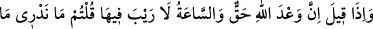

Onu serzenişten dolayı tekfîr etme,
Onu ehl-i nârdan sayma.
Eğer bir kimsenin de sabah akşam
Din yolunda yürüyen sâlihlerden olduğunu görürsen,
Allah Resûlü’nün cennet-i me’vâ ile müjdelediği bir kimse değilse,
Yakîn bir ilimle onu cennet ehlinden sayma,
Onun son gününden emin olma.
Şeyh Alâuddevle “Urve” kitabında şöyle demiştir: Bütün İslâm fırkaları kurtuluş
ehlidir. Peygamber (s.a.)’ in: “Ümmetim 73 fırkaya ayrılacak; biri hariç hepsi
cehennemde olacak, işte o bir fırka fırkay-ı nâciyedir”[19] sözündeki kurtulacak olan
fırka şefaatsiz olarak kurtulacak olan demektir.
32. «Allah’ın vaadi gerçektir, kıyâmet gününde şüphe yoktur» dendiği zaman:
Kıyâmetin ne olduğunu bilmiyoruz, onun bir tahminden ibaret olduğunu sanıyoruz;
(onun hakkında) kesin bir bilgi elde etmiş değiliz, demiştiniz.
“Allah’ın” gelecek önemli işlerle ilgili “va’di gerçektir,” vukûu kesindir. Allah’ın
vaad ettiği şeylerin en meşhuru olan kıyâmet “sâ‘atinin geleceğinde” onun vukûunu,
sâdık muhbir haber verdiği için ve varlığına bir çok şâhidler mevcut olduğu için “şüphe
yoktur” dendiği zaman:” ey dirilişi inkâr eden kâfir ve zındıklar, siz azgınlıkta iyice
ileri gittiğiniz için, onu garipseyip yadsıyarak “Sâ‘at nedir, bilmiyoruz, (onu) sadece
(bir kuruntu) sanıyoruz biz ona” kıyâmetin mümkün olduğuna kesin “inanmıyoruz”
demiştiniz ha?!”
Bu ifâdenin zâhiri bir şeyi kendinden istisna etmektir. Fethurrahman’da şöyle
denilmiştir: “Yâni bizim şek ve şüpheden başka bir inancımız yoktur. Zan tercih
sıfatıyla şüphenin iki tarafından biridir. Zan yakin ve kesin inanç mânâsına da gelir.
Mutlak zannın mukabili ise istîkândır. Bundan dolayı burada “biz ona kesin
inanmıyoruz” yâni biz kıyâmetin kopmasının mümkün olduğuna kesin inanmıyoruz”
demektir. Yâni; kıyâmette yeniden diriltilme hususunda bir yakînimiz yoktur.
Belki de bunlar 24. âyette beyân edilen; “Ne varsa dünya hayatımızdır başka bir şey
yoktur” diyenler, değildir. Bunlardan bazıları dirilişi ve kıyâmeti kesin olarak kabul
etmez ve reddeder. Bunlar 24. âyette anlatılanlardır. Bazıları da dirilişe dâir birçok
delilleri Peygamber (s.a.)’den duyup işittikleri için sadece şüphe içindedirler. Bunlar
da bu âyette anlatılanlardı.
Ta’rifât kitabında şöyle denmiştir: Zan, zıddına ihtimal olan üstün inançtır. Zan
kelimesi kesin inanç ve şüphede kullanılır. Yakîn ise nazar ve istidlâl ile şek ve şüpheyi